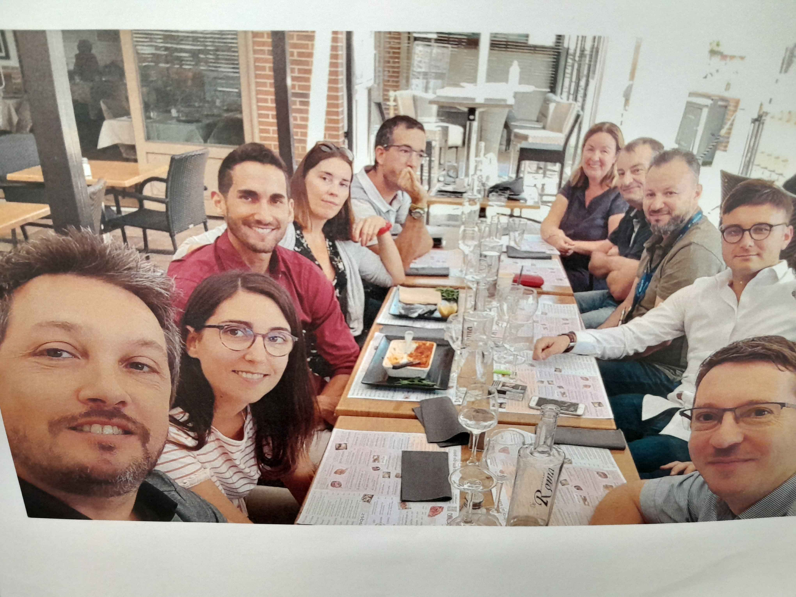
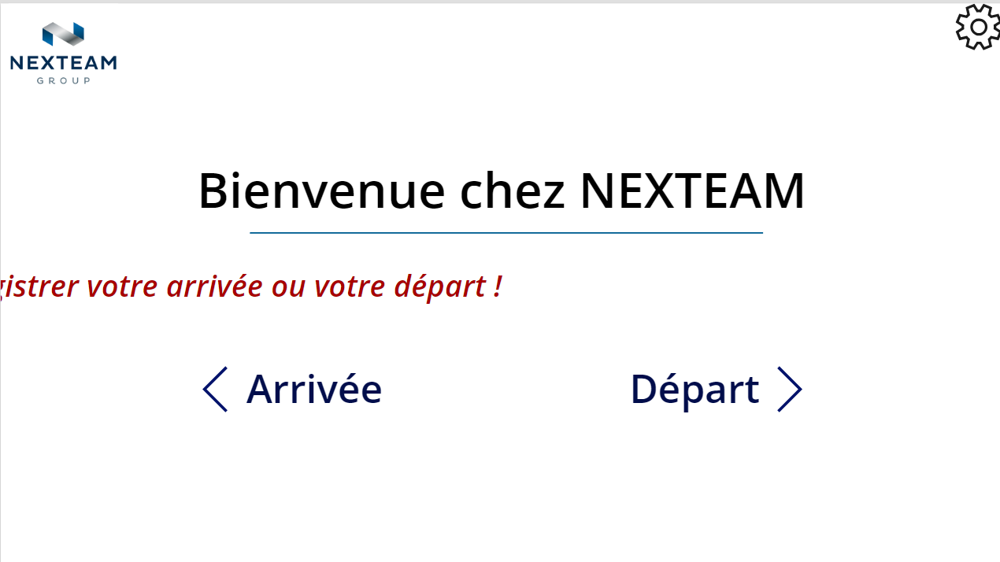
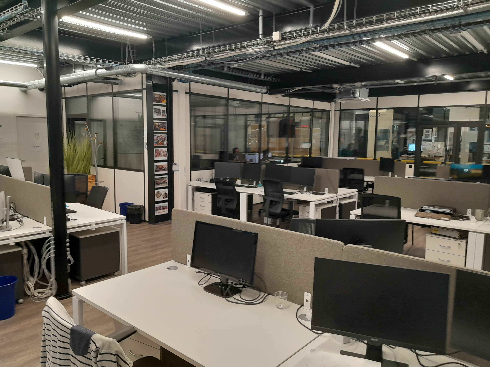

Introduction
L'apprentissage
Durant la première semaine, j'ai fait connaissance avec l'équipe sur place, principalement composée de membres du "SAP", un service de support informatique. Mon maître de stage, Gustavo Buldini, étant basé au Portugal, nous avons convenu d'organiser des réunions tous les deux jours pour faire le point et pour que je puisse le solliciter en cas de besoin.
Il m'a proposé deux projets sur lesquels travailler. Le premier consistait à créer un script pour dupliquer tous les scripts qu'ils enverraient sur une machine virtuelle. Le second projet impliquait de refaire leur application de gestion des entrées et sorties des visiteurs dans un autre langage de programmation. Nous avons décidé de commencer par la seconde option afin que je puisse me familiariser dès le début avec les technologies utilisées dans l'entreprise.
Cette semaine, j'ai donc principalement étudié le fonctionnement de la technologie en question et mis sur papier la théorie nécessaire pour pouvoir débuter le projet sans ambiguïté.
